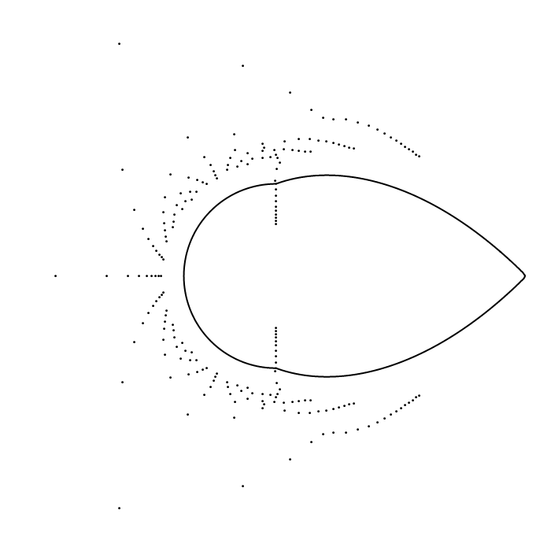

Zeros
of sections of exponential integrals
For
complex $z$, define the function
\[ F_a(z) = \int_{a-1}^a \left(t-\frac{1}{2}\right)^2 e^{zt}\,dt \] and
let \[ s_n[F_a](z) = \sum_{k=0}^{n} \frac{z^k}{k!} \int_{a-1}^a
\left(t-\frac{1}{2}\right)^2 t^k\,dt \] be the $n^{\text{th}}$ partial
sum of its Maclaurin series. We refer to $s_n[F_a](z)$ as
the $n^{\text{th}}$ section of the exponential integral
$F_a(z)$.
As
$n \to \infty$, most zeros of the sections $s_n[F_a](z)$ grow on the
order of $O(n)$. Consequently we rescale, replacing $z$ by
$nz$,
and instead consider the zeros of the normalized
sections $s_n[F_a](nz)$. The complex zeros of these
normalized sections accumulate
on the curve \[ \begin{align*} D(a) &= \left\{z \in \mathbb{C}
\,\colon
\Re(z) \leq 0,\,\,\, |z| \leq \frac{2}{|1-2a|+1},\,\,\, \text{and }
\left|ze^{1-(1-a)z}\right| = \frac{2}{|1-2a|+1}\right\} \\
&\qquad \cup \,\left\{z \in \mathbb{C}
\,\colon \Re(z) \geq 0,\,\,\, |z|
\leq \frac{2}{|1-2a|+1},\,\,\, \text{and }
\left|ze^{1-az}\right| = \frac{2}{|1-2a|+1}\right\} \\
&\qquad \cup \,\left\{z \in \mathbb{C}
\,\colon \Re(z) = 0 \,\,\,\text{and}\,\,\, |z|
\leq \frac{2}{(|1-2a|+1)e}
\right\}, \end{align*} \] which consists of two bulbous components, one
in each
half-plane, and a line segment on the imaginary axis. This
curve $D(a)$ is called the Szegő
curve for the function $F_a$.
Below is an image which shows the zeros of the first $40$
normalized sections (that is, the zeros of $s_n[F_a](nz)$ for
$n=1,2,\ldots,40$) and their Szegő curve $D(a)$. The
parameter $a$ ranges from $0$ to $1$ and back to $0$ in the animation.
If we
were to plot the zeros of more sections they would cluster nearer and
nearer to the Szegő curve.

For more information about this plot and the information above you can
check out my
master's thesis and this
paper.
Antonio R.
Vargas
February 18, 2013